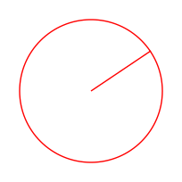

5. Reguläre Sprachen./course1/wly/05/__parent.wly:2:11
5. Reguläre Sprachen./course1/wly/05/__parent.wly:2:11
Hier sehen Sie einige Beispiele für gültige und ungültige./course1/wly/05/__parent.wly:4:5 Email-Adressen. Mit ./course1/wly/05/__parent.wly:5:5gültig./course1/wly/05/__parent.wly:5:26 meine ich, dass sie./course1/wly/05/__parent.wly:5:33 syntaktisch korrekt sind, ungeachtet, ob ein Konto mit./course1/wly/05/__parent.wly:6:5 dieser Email-Adresse besteht../course1/wly/05/__parent.wly:7:5
thomas.schmitz@hszg.de ./course1/wly/05/__parent.wly:10:5Gültig./course1/wly/05/__parent.wly:10:59 dominik@cs.sjtu.edu.cn ./course1/wly/05/__parent.wly:11:5Gültig./course1/wly/05/__parent.wly:11:59 raffaela@mayer@gmail.com ./course1/wly/05/__parent.wly:12:5Ungültig: @ kommt zweimal vor./course1/wly/05/__parent.wly:12:59 lorenz.klein@greatest/company/in/the/world.com ./course1/wly/05/__parent.wly:13:5Ungültig: Domain-Name darf kein / enthalten./course1/wly/05/__parent.wly:13:59 .schlaumeier@gmail.com ./course1/wly/05/__parent.wly:14:5Ungültig: Google will kein . an erster Stelle./course1/wly/05/__parent.wly:14:59
Hier sehen Sie den Teil eines HTML-Dokuments. Beachten Sie./course1/wly/05/__parent.wly:17:5 die typische hierarchisch-geschachtelte Struktur (sie./course1/wly/05/__parent.wly:18:5 müssen es nicht im Detail lesen):./course1/wly/05/__parent.wly:19:5
<./course1/wly/05/__parent.wly:22:5div./course1/wly/05/__parent.wly:22:6 ./course1/wly/05/__parent.wly:22:9class./course1/wly/05/__parent.wly:22:10=./course1/wly/05/__parent.wly:22:15"carousel-inner"./course1/wly/05/__parent.wly:22:16 ./course1/wly/05/__parent.wly:22:32style./course1/wly/05/__parent.wly:22:33=./course1/wly/05/__parent.wly:22:38"display:inline-block"./course1/wly/05/__parent.wly:22:39>./course1/wly/05/__parent.wly:22:61 ./course1/wly/05/__parent.wly:23:5<./course1/wly/05/__parent.wly:23:9div./course1/wly/05/__parent.wly:23:10 ./course1/wly/05/__parent.wly:23:13class./course1/wly/05/__parent.wly:23:14=./course1/wly/05/__parent.wly:23:19"item active"./course1/wly/05/__parent.wly:23:20>./course1/wly/05/__parent.wly:23:33 ./course1/wly/05/__parent.wly:24:5<./course1/wly/05/__parent.wly:24:13p./course1/wly/05/__parent.wly:24:14>./course1/wly/05/__parent.wly:24:15$110 x + 794$./course1/wly/05/__parent.wly:24:16</./course1/wly/05/__parent.wly:24:29p./course1/wly/05/__parent.wly:24:31>./course1/wly/05/__parent.wly:24:32<./course1/wly/05/__parent.wly:24:33img./course1/wly/05/__parent.wly:24:34 ./course1/wly/05/__parent.wly:24:37loading./course1/wly/05/__parent.wly:24:38=./course1/wly/05/__parent.wly:24:45"lazy"./course1/wly/05/__parent.wly:24:46 ./course1/wly/05/__parent.wly:24:52src./course1/wly/05/__parent.wly:24:53=./course1/wly/05/__parent.wly:24:56"img/hash/hashfunction_110_794.svg"./course1/wly/05/__parent.wly:24:57>./course1/wly/05/__parent.wly:24:92 ./course1/wly/05/__parent.wly:25:5</./course1/wly/05/__parent.wly:25:9div./course1/wly/05/__parent.wly:25:11>./course1/wly/05/__parent.wly:25:14 ./course1/wly/05/__parent.wly:26:5<./course1/wly/05/__parent.wly:26:9div./course1/wly/05/__parent.wly:26:10 ./course1/wly/05/__parent.wly:26:13class./course1/wly/05/__parent.wly:26:14=./course1/wly/05/__parent.wly:26:19"item"./course1/wly/05/__parent.wly:26:20>./course1/wly/05/__parent.wly:26:26 ./course1/wly/05/__parent.wly:27:5<./course1/wly/05/__parent.wly:27:13p./course1/wly/05/__parent.wly:27:14>./course1/wly/05/__parent.wly:27:15$502 x + 121$./course1/wly/05/__parent.wly:27:16</./course1/wly/05/__parent.wly:27:29p./course1/wly/05/__parent.wly:27:31>./course1/wly/05/__parent.wly:27:32<./course1/wly/05/__parent.wly:27:33img./course1/wly/05/__parent.wly:27:34 ./course1/wly/05/__parent.wly:27:37loading./course1/wly/05/__parent.wly:27:38=./course1/wly/05/__parent.wly:27:45"lazy"./course1/wly/05/__parent.wly:27:46 ./course1/wly/05/__parent.wly:27:52src./course1/wly/05/__parent.wly:27:53=./course1/wly/05/__parent.wly:27:56"img/hash/hashfunction_502_121.svg"./course1/wly/05/__parent.wly:27:57>./course1/wly/05/__parent.wly:27:92 ./course1/wly/05/__parent.wly:28:5</./course1/wly/05/__parent.wly:28:9div./course1/wly/05/__parent.wly:28:11>./course1/wly/05/__parent.wly:28:14 ./course1/wly/05/__parent.wly:29:5<./course1/wly/05/__parent.wly:29:9div./course1/wly/05/__parent.wly:29:10 ./course1/wly/05/__parent.wly:29:13class./course1/wly/05/__parent.wly:29:14=./course1/wly/05/__parent.wly:29:19"item"./course1/wly/05/__parent.wly:29:20>./course1/wly/05/__parent.wly:29:26 ./course1/wly/05/__parent.wly:30:5<./course1/wly/05/__parent.wly:30:13p./course1/wly/05/__parent.wly:30:14>./course1/wly/05/__parent.wly:30:15$617 x + 5$./course1/wly/05/__parent.wly:30:16</./course1/wly/05/__parent.wly:30:27p./course1/wly/05/__parent.wly:30:29>./course1/wly/05/__parent.wly:30:30<./course1/wly/05/__parent.wly:30:31img./course1/wly/05/__parent.wly:30:32 ./course1/wly/05/__parent.wly:30:35loading./course1/wly/05/__parent.wly:30:36=./course1/wly/05/__parent.wly:30:43"lazy"./course1/wly/05/__parent.wly:30:44 ./course1/wly/05/__parent.wly:30:50src./course1/wly/05/__parent.wly:30:51=./course1/wly/05/__parent.wly:30:54"img/hash/hashfunction_617_5.svg"./course1/wly/05/__parent.wly:30:55>./course1/wly/05/__parent.wly:30:88 ./course1/wly/05/__parent.wly:31:5</./course1/wly/05/__parent.wly:31:9div./course1/wly/05/__parent.wly:31:11>./course1/wly/05/__parent.wly:31:14 ./course1/wly/05/__parent.wly:32:5<./course1/wly/05/__parent.wly:32:9div./course1/wly/05/__parent.wly:32:10 ./course1/wly/05/__parent.wly:32:13class./course1/wly/05/__parent.wly:32:14=./course1/wly/05/__parent.wly:32:19"item"./course1/wly/05/__parent.wly:32:20>./course1/wly/05/__parent.wly:32:26 ./course1/wly/05/__parent.wly:33:5<./course1/wly/05/__parent.wly:33:13p./course1/wly/05/__parent.wly:33:14>./course1/wly/05/__parent.wly:33:15$815 x + 562$./course1/wly/05/__parent.wly:33:16</./course1/wly/05/__parent.wly:33:29p./course1/wly/05/__parent.wly:33:31>./course1/wly/05/__parent.wly:33:32<./course1/wly/05/__parent.wly:33:33img./course1/wly/05/__parent.wly:33:34 ./course1/wly/05/__parent.wly:33:37loading./course1/wly/05/__parent.wly:33:38=./course1/wly/05/__parent.wly:33:45"lazy"./course1/wly/05/__parent.wly:33:46 ./course1/wly/05/__parent.wly:33:52src./course1/wly/05/__parent.wly:33:53=./course1/wly/05/__parent.wly:33:56"img/hash/hashfunction_851_562.svg"./course1/wly/05/__parent.wly:33:57>./course1/wly/05/__parent.wly:33:92 ./course1/wly/05/__parent.wly:34:5</./course1/wly/05/__parent.wly:34:9div./course1/wly/05/__parent.wly:34:11>./course1/wly/05/__parent.wly:34:14 ./course1/wly/05/__parent.wly:35:5<./course1/wly/05/__parent.wly:35:9div./course1/wly/05/__parent.wly:35:10 ./course1/wly/05/__parent.wly:35:13class./course1/wly/05/__parent.wly:35:14=./course1/wly/05/__parent.wly:35:19"item"./course1/wly/05/__parent.wly:35:20>./course1/wly/05/__parent.wly:35:26 ./course1/wly/05/__parent.wly:36:5<./course1/wly/05/__parent.wly:36:13p./course1/wly/05/__parent.wly:36:14>./course1/wly/05/__parent.wly:36:15$868 x + 858$./course1/wly/05/__parent.wly:36:16</./course1/wly/05/__parent.wly:36:29p./course1/wly/05/__parent.wly:36:31>./course1/wly/05/__parent.wly:36:32<./course1/wly/05/__parent.wly:36:33img./course1/wly/05/__parent.wly:36:34 ./course1/wly/05/__parent.wly:36:37loading./course1/wly/05/__parent.wly:36:38=./course1/wly/05/__parent.wly:36:45"lazy"./course1/wly/05/__parent.wly:36:46 ./course1/wly/05/__parent.wly:36:52src./course1/wly/05/__parent.wly:36:53=./course1/wly/05/__parent.wly:36:56"img/hash/hashfunction_868_858.svg"./course1/wly/05/__parent.wly:36:57>./course1/wly/05/__parent.wly:36:92 ./course1/wly/05/__parent.wly:37:5</./course1/wly/05/__parent.wly:37:9div./course1/wly/05/__parent.wly:37:11>./course1/wly/05/__parent.wly:37:14 ./course1/wly/05/__parent.wly:38:5<./course1/wly/05/__parent.wly:38:9div./course1/wly/05/__parent.wly:38:10 ./course1/wly/05/__parent.wly:38:13class./course1/wly/05/__parent.wly:38:14=./course1/wly/05/__parent.wly:38:19"item"./course1/wly/05/__parent.wly:38:20>./course1/wly/05/__parent.wly:38:26 ./course1/wly/05/__parent.wly:39:5<./course1/wly/05/__parent.wly:39:13p./course1/wly/05/__parent.wly:39:14>./course1/wly/05/__parent.wly:39:15$915 x + 320$./course1/wly/05/__parent.wly:39:16</./course1/wly/05/__parent.wly:39:29p./course1/wly/05/__parent.wly:39:31>./course1/wly/05/__parent.wly:39:32<./course1/wly/05/__parent.wly:39:33img./course1/wly/05/__parent.wly:39:34 ./course1/wly/05/__parent.wly:39:37loading./course1/wly/05/__parent.wly:39:38=./course1/wly/05/__parent.wly:39:45"lazy"./course1/wly/05/__parent.wly:39:46 ./course1/wly/05/__parent.wly:39:52src./course1/wly/05/__parent.wly:39:53=./course1/wly/05/__parent.wly:39:56"img/hash/hashfunction_915_320.svg"./course1/wly/05/__parent.wly:39:57>./course1/wly/05/__parent.wly:39:92 ./course1/wly/05/__parent.wly:40:5</./course1/wly/05/__parent.wly:40:9div./course1/wly/05/__parent.wly:40:11>./course1/wly/05/__parent.wly:40:14 </./course1/wly/05/__parent.wly:41:5div./course1/wly/05/__parent.wly:41:7 ./course1/wly/05/__parent.wly:41:10class./course1/wly/05/__parent.wly:41:11=./course1/wly/05/__parent.wly:41:16"carousel-inner"./course1/wly/05/__parent.wly:41:17>./course1/wly/05/__parent.wly:41:33
Hier sehen Sie einen Ausschnitt aus einem Elm-Programm./course1/wly/05/__parent.wly:44:5 (auch diesen müssen Sie nicht im Detail lesen):./course1/wly/05/__parent.wly:45:5
find./course1/wly/05/__parent.wly:48:6 ./course1/wly/05/__parent.wly:48:18:./course1/wly/05/__parent.wly:48:20 ./course1/wly/05/__parent.wly:48:29Bst./course1/wly/05/__parent.wly:48:31 ./course1/wly/05/__parent.wly:48:42->./course1/wly/05/__parent.wly:48:44 ./course1/wly/05/__parent.wly:48:54String./course1/wly/05/__parent.wly:48:56 ./course1/wly/05/__parent.wly:48:70->./course1/wly/05/__parent.wly:48:72 ./course1/wly/05/__parent.wly:48:82Maybe./course1/wly/05/__parent.wly:48:84 ./course1/wly/05/__parent.wly:48:97String./course1/wly/05/__parent.wly:48:99./course1/wly/05/__parent.wly:48:113 find./course1/wly/05/__parent.wly:49:6 ./course1/wly/05/__parent.wly:49:18tree./course1/wly/05/__parent.wly:49:20 ./course1/wly/05/__parent.wly:49:32key./course1/wly/05/__parent.wly:49:34 ./course1/wly/05/__parent.wly:49:45=./course1/wly/05/__parent.wly:49:47./course1/wly/05/__parent.wly:49:56 ./course1/wly/05/__parent.wly:50:5case./course1/wly/05/__parent.wly:50:10 ./course1/wly/05/__parent.wly:50:22tree./course1/wly/05/__parent.wly:50:24 ./course1/wly/05/__parent.wly:50:36of./course1/wly/05/__parent.wly:50:38./course1/wly/05/__parent.wly:50:48 ./course1/wly/05/__parent.wly:51:5Empty./course1/wly/05/__parent.wly:51:14 ./course1/wly/05/__parent.wly:51:27_./course1/wly/05/__parent.wly:51:29 ./course1/wly/05/__parent.wly:51:38->./course1/wly/05/__parent.wly:51:40./course1/wly/05/__parent.wly:51:50 ./course1/wly/05/__parent.wly:52:5Nothing./course1/wly/05/__parent.wly:52:18./course1/wly/05/__parent.wly:52:33 ./course1/wly/05/__parent.wly:53:5Node./course1/wly/05/__parent.wly:53:14 ./course1/wly/05/__parent.wly:53:26(./course1/wly/05/__parent.wly:53:28 ./course1/wly/05/__parent.wly:53:37keyHere./course1/wly/05/__parent.wly:53:39, ./course1/wly/05/__parent.wly:53:54valueHere./course1/wly/05/__parent.wly:53:57 ./course1/wly/05/__parent.wly:53:74)./course1/wly/05/__parent.wly:53:76 ./course1/wly/05/__parent.wly:53:85leftChild./course1/wly/05/__parent.wly:53:87 ./course1/wly/05/__parent.wly:53:104rightChild./course1/wly/05/__parent.wly:53:106 ./course1/wly/05/__parent.wly:53:124->./course1/wly/05/__parent.wly:53:126./course1/wly/05/__parent.wly:53:136 ./course1/wly/05/__parent.wly:54:5if./course1/wly/05/__parent.wly:54:18 ./course1/wly/05/__parent.wly:54:28key./course1/wly/05/__parent.wly:54:30 ./course1/wly/05/__parent.wly:54:41==./course1/wly/05/__parent.wly:54:43 ./course1/wly/05/__parent.wly:54:53keyHere./course1/wly/05/__parent.wly:54:55 ./course1/wly/05/__parent.wly:54:70then./course1/wly/05/__parent.wly:54:72./course1/wly/05/__parent.wly:54:84 ./course1/wly/05/__parent.wly:55:5Just./course1/wly/05/__parent.wly:55:22 ./course1/wly/05/__parent.wly:55:34valueHere./course1/wly/05/__parent.wly:55:36./course1/wly/05/__parent.wly:55:53 ./course1/wly/05/__parent.wly:56:5else./course1/wly/05/__parent.wly:56:18 ./course1/wly/05/__parent.wly:56:30if./course1/wly/05/__parent.wly:56:32 ./course1/wly/05/__parent.wly:56:42key./course1/wly/05/__parent.wly:56:44 ./course1/wly/05/__parent.wly:56:55<./course1/wly/05/__parent.wly:56:57 ./course1/wly/05/__parent.wly:56:66keyHere./course1/wly/05/__parent.wly:56:68 ./course1/wly/05/__parent.wly:56:83then./course1/wly/05/__parent.wly:56:85./course1/wly/05/__parent.wly:56:97 ./course1/wly/05/__parent.wly:57:5find./course1/wly/05/__parent.wly:57:22 ./course1/wly/05/__parent.wly:57:34leftChild./course1/wly/05/__parent.wly:57:36 ./course1/wly/05/__parent.wly:57:53key./course1/wly/05/__parent.wly:57:55./course1/wly/05/__parent.wly:57:66 ./course1/wly/05/__parent.wly:58:5else./course1/wly/05/__parent.wly:58:18./course1/wly/05/__parent.wly:58:30 ./course1/wly/05/__parent.wly:59:5find./course1/wly/05/__parent.wly:59:22 ./course1/wly/05/__parent.wly:59:34rightChild./course1/wly/05/__parent.wly:59:36 ./course1/wly/05/__parent.wly:59:54key./course1/wly/05/__parent.wly:59:56
Als letztes Beispiel sehen Sie hier eine svg-Datei. Dies./course1/wly/05/__parent.wly:62:5 ist ein Dateiformat für Vektorgrafiken. In diesem Falle ein./course1/wly/05/__parent.wly:63:5 Kreis mit einer Geraden:./course1/wly/05/__parent.wly:64:5

course1/public/img/svg-example.svg<?./course1/wly/05/__parent.wly:73:5xml./course1/wly/05/__parent.wly:73:7 ./course1/wly/05/__parent.wly:73:10version./course1/wly/05/__parent.wly:73:11=./course1/wly/05/__parent.wly:73:18"1.0"./course1/wly/05/__parent.wly:73:19 ./course1/wly/05/__parent.wly:73:24encoding./course1/wly/05/__parent.wly:73:25=./course1/wly/05/__parent.wly:73:33"UTF-8"./course1/wly/05/__parent.wly:73:34?>./course1/wly/05/__parent.wly:73:41 <./course1/wly/05/__parent.wly:74:5svg./course1/wly/05/__parent.wly:74:6 ./course1/wly/05/__parent.wly:75:5xmlns./course1/wly/05/__parent.wly:75:9=./course1/wly/05/__parent.wly:75:14"http://www.w3.org/2000/svg"./course1/wly/05/__parent.wly:75:15 ./course1/wly/05/__parent.wly:76:5xmlns:xlink./course1/wly/05/__parent.wly:76:9=./course1/wly/05/__parent.wly:76:20"http://www.w3.org/1999/xlink"./course1/wly/05/__parent.wly:76:21 ./course1/wly/05/__parent.wly:77:5width./course1/wly/05/__parent.wly:77:9=./course1/wly/05/__parent.wly:77:14"204px"./course1/wly/05/__parent.wly:77:15 ./course1/wly/05/__parent.wly:77:22height./course1/wly/05/__parent.wly:77:23=./course1/wly/05/__parent.wly:77:29"204px"./course1/wly/05/__parent.wly:77:30 ./course1/wly/05/__parent.wly:78:5viewBox./course1/wly/05/__parent.wly:78:9=./course1/wly/05/__parent.wly:78:16"0 0 102 102"./course1/wly/05/__parent.wly:78:17 ./course1/wly/05/__parent.wly:79:5version./course1/wly/05/__parent.wly:79:9=./course1/wly/05/__parent.wly:79:16"1.1"./course1/wly/05/__parent.wly:79:17 >./course1/wly/05/__parent.wly:80:5 ./course1/wly/05/__parent.wly:81:5<./course1/wly/05/__parent.wly:81:9g./course1/wly/05/__parent.wly:81:10 ./course1/wly/05/__parent.wly:81:11id./course1/wly/05/__parent.wly:81:12=./course1/wly/05/__parent.wly:81:14"layer 1"./course1/wly/05/__parent.wly:81:15>./course1/wly/05/__parent.wly:81:24 ./course1/wly/05/__parent.wly:82:5<./course1/wly/05/__parent.wly:82:13circle./course1/wly/05/__parent.wly:82:14 ./course1/wly/05/__parent.wly:83:5style./course1/wly/05/__parent.wly:83:17=./course1/wly/05/__parent.wly:83:22"fill:none;stroke:rgba(255,0,0,255);stroke-width:0.7;"./course1/wly/05/__parent.wly:83:23 ./course1/wly/05/__parent.wly:84:5cx./course1/wly/05/__parent.wly:84:17=./course1/wly/05/__parent.wly:84:19"51"./course1/wly/05/__parent.wly:84:20 ./course1/wly/05/__parent.wly:85:5cy./course1/wly/05/__parent.wly:85:17=./course1/wly/05/__parent.wly:85:19"51"./course1/wly/05/__parent.wly:85:20 ./course1/wly/05/__parent.wly:86:5r./course1/wly/05/__parent.wly:86:17=./course1/wly/05/__parent.wly:86:18"40"./course1/wly/05/__parent.wly:86:19 ./course1/wly/05/__parent.wly:87:5/>./course1/wly/05/__parent.wly:87:13 ./course1/wly/05/__parent.wly:88:5<./course1/wly/05/__parent.wly:88:13path./course1/wly/05/__parent.wly:88:14 ./course1/wly/05/__parent.wly:89:5style./course1/wly/05/__parent.wly:89:17=./course1/wly/05/__parent.wly:89:22"fill:none;stroke:rgba(255,0,0,255);stroke-width:0.7;"./course1/wly/05/__parent.wly:89:23 ./course1/wly/05/__parent.wly:90:5d./course1/wly/05/__parent.wly:90:17=./course1/wly/05/__parent.wly:90:18"M 51 51 l 33.5 -22.5"./course1/wly/05/__parent.wly:90:19 ./course1/wly/05/__parent.wly:91:5/>./course1/wly/05/__parent.wly:91:13 ./course1/wly/05/__parent.wly:92:5</./course1/wly/05/__parent.wly:92:9g./course1/wly/05/__parent.wly:92:11>./course1/wly/05/__parent.wly:92:12 </./course1/wly/05/__parent.wly:93:5svg./course1/wly/05/__parent.wly:93:7>./course1/wly/05/__parent.wly:93:10
Was haben diese vier Beispiele gemeinsam? Es handelt sich./course1/wly/05/__parent.wly:96:5 in allen Fällen um ./course1/wly/05/__parent.wly:97:5Daten./course1/wly/05/__parent.wly:97:25,./course1/wly/05/__parent.wly:97:31 die in einem bestimmten./course1/wly/05/__parent.wly:97:31 festgelegten ./course1/wly/05/__parent.wly:98:5Format./course1/wly/05/__parent.wly:98:19 dargelegt werden. Soll ein Rechner./course1/wly/05/__parent.wly:98:26 etwas sinnvolles damit anfangen (zum Beispiel das./course1/wly/05/__parent.wly:99:5 Elm-Programm starten oder die HTML-Seite oder die Svg-Datei./course1/wly/05/__parent.wly:100:5 auf dem Bildschirm darstellen), muss er dieses Format erst./course1/wly/05/__parent.wly:101:5 einmal "verstehen", also den bloßen String aus./course1/wly/05/__parent.wly:102:5 ASCII-Zeichen umwandeln in eine logisch sinnvolle Struktur../course1/wly/05/__parent.wly:103:5 Und genau darum geht es in den Formalen Sprachen: wir./course1/wly/05/__parent.wly:104:5 wollen Begriffe, Regeln, Methoden, Algorithmen entwickeln,./course1/wly/05/__parent.wly:105:5 um Daten, die in einem bestimmten Format vorliegen, zu./course1/wly/05/__parent.wly:106:5 verarbeiten; ja auch erst einmal überhaupt Begriffe./course1/wly/05/__parent.wly:107:5 festlegen, wie man solche Formate definiert../course1/wly/05/__parent.wly:108:5
Kommen wir auf unser erstes, einfachstes Beispiel zurück:./course1/wly/05/__parent.wly:113:5 die Email-Adressen. Können Sie möglichst präzise und./course1/wly/05/__parent.wly:114:5 möglichst formal beschreiben, wie eine korrekte./course1/wly/05/__parent.wly:115:5 Email-Adresse auszusehen hat? Hier versuche ich es einmal:./course1/wly/05/__parent.wly:116:5
Eine Emailadresse besteht aus einem
./course1/wly/05/__parent.wly:119:9Benutzernamen./course1/wly/05/__parent.wly:119:46
und./course1/wly/05/__parent.wly:119:60
einem
./course1/wly/05/__parent.wly:120:9Domainnamen./course1/wly/05/__parent.wly:120:16,./course1/wly/05/__parent.wly:120:28
die mit einem
./course1/wly/05/__parent.wly:120:28@./course1/wly/05/__parent.wly:120:45
verbunden sind. Der./course1/wly/05/__parent.wly:120:47
Benutzername ist ein nichtleerer String bestehend aus Groß-./course1/wly/05/__parent.wly:121:9
und Kleinbuchstaben, Zahlen, und Punkten
./course1/wly/05/__parent.wly:122:9(./course1/wly/05/__parent.wly:122:9../course1/wly/05/__parent.wly:122:52)../course1/wly/05/__parent.wly:122:54
Erster und./course1/wly/05/__parent.wly:122:54
letzter Buchstaben dürfen keine Punkte sein, außerdem./course1/wly/05/__parent.wly:123:9
dürfen keine zwei Punkte nebeneinander stehen. Der./course1/wly/05/__parent.wly:124:9
Domainname ist eine Folge von mindestenes zwei
./course1/wly/05/__parent.wly:125:9Labels./course1/wly/05/__parent.wly:125:57,./course1/wly/05/__parent.wly:125:64
./course1/wly/05/__parent.wly:125:64
die jeweils mit einem
./course1/wly/05/__parent.wly:126:9../course1/wly/05/__parent.wly:126:32
separiert sind. Ein Label ist ein./course1/wly/05/__parent.wly:126:34
nichtleerer String aus Groß- und Kleinbuchstaben, Zahlen./course1/wly/05/__parent.wly:127:9
und dem Bindestrich
./course1/wly/05/__parent.wly:128:9(./course1/wly/05/__parent.wly:128:9-./course1/wly/05/__parent.wly:128:31)../course1/wly/05/__parent.wly:128:33
Die genauen Regeln mögen von Anbieter zu Anbieter./course1/wly/05/__parent.wly:130:5
variieren; ich habe mich mal an das gehalten, was ich./course1/wly/05/__parent.wly:131:5
experimentell bei
./course1/wly/05/__parent.wly:132:5gmail.com./course1/wly/05/__parent.wly:132:24
herausgefunden habe. Die./course1/wly/05/__parent.wly:132:34
obige Beschreibung ist (hoffentlich) verständlich und./course1/wly/05/__parent.wly:133:5
präzise und unzweideutig. Allerdings ist sie in natürlicher./course1/wly/05/__parent.wly:134:5
Sprache verfasst; es ist beispielsweise nicht klar, wie ein./course1/wly/05/__parent.wly:135:5
Rechner aus der obigen Beschreibung einen Algorithmus./course1/wly/05/__parent.wly:136:5
konstruieren kann, der Korrektheit einer Email-Adresse./course1/wly/05/__parent.wly:137:5
überprüft. Außerdem schleichen sich bei natürlicher Sprache./course1/wly/05/__parent.wly:138:5
schnell Zweideutigkeiten ein, die a priori nicht immer zu./course1/wly/05/__parent.wly:139:5
erkennen sind. Wir wollen daher ein formales Regelwerk./course1/wly/05/__parent.wly:140:5
erstellen, wie wir Formate dieser Art vollständig und./course1/wly/05/__parent.wly:141:5
eindeutig beschreiben können. Ich werde dies nun Schritt./course1/wly/05/__parent.wly:142:5
für Schritt entwickeln, erst informell anhand des./course1/wly/05/__parent.wly:143:5
Email-Adressen-Beispiels und dann, im nächsten Kapitel,./course1/wly/05/__parent.wly:144:5
formal und abstrakt. Eine Emailadresse ist von der Form./course1/wly/05/__parent.wly:145:5
./course1/wly/05/__parent.wly:146:5Benutzername./course1/wly/05/__parent.wly:146:6@./course1/wly/05/__parent.wly:146:20Domainnname./course1/wly/05/__parent.wly:146:23../course1/wly/05/__parent.wly:146:35
Dies können wir als./course1/wly/05/__parent.wly:146:35
./course1/wly/05/__parent.wly:147:5Ableitungsregel./course1/wly/05/__parent.wly:147:6
darstellen:./course1/wly/05/__parent.wly:147:22
<EmailAdress> -> <User> @ <Domain>./course1/wly/05/__parent.wly:150:5
Wie können wir nun beispielsweise eine ähnliche./course1/wly/05/__parent.wly:153:5
Ableitungsregeln für
./course1/wly/05/__parent.wly:154:5<Domain>./course1/wly/05/__parent.wly:154:27
erstellen? Eine
./course1/wly/05/__parent.wly:154:36<Domain>./course1/wly/05/__parent.wly:154:54
./course1/wly/05/__parent.wly:154:63
soll eine Folge aus mindestens zwei
./course1/wly/05/__parent.wly:155:5<Label>./course1/wly/05/__parent.wly:155:42
sein, jeweils./course1/wly/05/__parent.wly:155:50
durch einen
./course1/wly/05/__parent.wly:156:5../course1/wly/05/__parent.wly:156:18
separiert. Wir erreichen dies, indem wir./course1/wly/05/__parent.wly:156:20
einen an Rekursion erinnernden Trick anwenden: entweder./course1/wly/05/__parent.wly:157:5
gibt es genau zwei Labels oder die Domain beginnt mit einem./course1/wly/05/__parent.wly:158:5
Label, gefolgt von einem Punkt und wiederum einer
./course1/wly/05/__parent.wly:159:5Folge./course1/wly/05/__parent.wly:159:56
von mindestens zwei durch
./course1/wly/05/__parent.wly:160:5../course1/wly/05/__parent.wly:160:32
separierten Labels./course1/wly/05/__parent.wly:160:34,./course1/wly/05/__parent.wly:160:54
also./course1/wly/05/__parent.wly:160:54
wiederum etwas, das wie ein Domainname aussieht. Daher:./course1/wly/05/__parent.wly:161:5
<Domain> -> <Label> . <Label>./course1/wly/05/__parent.wly:164:5 <Domain> -> <Label> . <Domain>./course1/wly/05/__parent.wly:165:5
Wir geben also
./course1/wly/05/__parent.wly:168:5zwei./course1/wly/05/__parent.wly:168:21
Möglichkeiten an, wie mit einem./course1/wly/05/__parent.wly:168:26
./course1/wly/05/__parent.wly:169:5<Domain>./course1/wly/05/__parent.wly:169:6
zu verfahren ist. Was ist nun
./course1/wly/05/__parent.wly:169:15<Label>./course1/wly/05/__parent.wly:169:47?./course1/wly/05/__parent.wly:169:55
Dies./course1/wly/05/__parent.wly:169:55
ist eine nichtleere Folge von in Domainnamen erlaubten./course1/wly/05/__parent.wly:170:5
Zeichen. Diese sind alphanumerisch (Buchstaben und Zahlen)./course1/wly/05/__parent.wly:171:5
und der Strich
./course1/wly/05/__parent.wly:172:5-./course1/wly/05/__parent.wly:172:21
(in der Praxis sind eventuell noch./course1/wly/05/__parent.wly:172:23
weitere Zeichen erlaubt; im Ernstfall hängt dies davon ab,./course1/wly/05/__parent.wly:173:5
was die Domain Name Server des jeweiligen Landes / der./course1/wly/05/__parent.wly:174:5
jeweiligen Top-Level-Domain erlauben, siehe zum
./course1/wly/05/__parent.wly:175:5Beispiel Wikipedia: Internationalized Domain
Name./course1/wly/05/__parent.wly:177:5../course1/wly/05/__parent.wly:177:71
Wie formulieren wir
./course1/wly/05/__parent.wly:178:5nichtleere Folge von ..../course1/wly/05/__parent.wly:178:26
mit unserer./course1/wly/05/__parent.wly:178:51
./course1/wly/05/__parent.wly:179:5-->;./course1/wly/05/__parent.wly:179:6-Notation?./course1/wly/05/__parent.wly:179:11
Wieder mit dem Rekursionstrick:./course1/wly/05/__parent.wly:179:11
<Label> -> <AlphaNumOrDash>./course1/wly/05/__parent.wly:182:5 <Label> -> <AlphaNumOrDash> <Label>./course1/wly/05/__parent.wly:183:5 <AlphaNumOrDash> -> <AlphaNum>./course1/wly/05/__parent.wly:184:5 <AlphaNumOrDash> -> -./course1/wly/05/__parent.wly:185:5
Nun müssen wir noch Regeln für
./course1/wly/05/__parent.wly:188:5<AlphaNum>./course1/wly/05/__parent.wly:188:37
angeben. Hier./course1/wly/05/__parent.wly:188:48
führen wir eine weitere Konvention ein: nämlich, dass wir./course1/wly/05/__parent.wly:189:5
verschiedene Alternativen mit einem senkrechten Strich |./course1/wly/05/__parent.wly:190:5
separieren:./course1/wly/05/__parent.wly:191:5
<AlphaNum> -> a | b | c | d | e | f | g | h | i | j | k | l | m | n | o | p | q | r | s | t | u | v | w | x | y | z./course1/wly/05/__parent.wly:194:5 <AlphaNum> -> A | B | C | D | E | F | G | H | I | J | K | L | M | N | O | P | Q | R | S | T | U | V | W | X | Y | Z./course1/wly/05/__parent.wly:195:5 <AlphaNum> -> 0 | 1 | 2 | 3 | 4 | 5 | 6 | 7 | 8 | 9./course1/wly/05/__parent.wly:196:5
Beachten Sie: ich habe hier absichtlich nicht
./course1/wly/05/__parent.wly:199:5<AlphaNum>./course1/wly/05/__parent.wly:199:52
*->* a *|* ... *|* z./course1/wly/05/__parent.wly:200:5
geschrieben, weil ich in diesem./course1/wly/05/__parent.wly:200:26
Beispiel wirklich alles ausschreiben wollte und mit der./course1/wly/05/__parent.wly:201:5
...-Notation schon wieder etwas menschen- aber nicht./course1/wly/05/__parent.wly:202:5
maschinenlesbares eingeführt hätte. Wir brauchen noch./course1/wly/05/__parent.wly:203:5
Regeln für
./course1/wly/05/__parent.wly:204:5<User>./course1/wly/05/__parent.wly:204:17../course1/wly/05/__parent.wly:204:24
Dies ist ein nichtleerer String aus./course1/wly/05/__parent.wly:204:24
alphanumerischen Zeichen und dem Punkt
./course1/wly/05/__parent.wly:205:5../course1/wly/05/__parent.wly:205:45,./course1/wly/05/__parent.wly:205:47
wobei der Punkt./course1/wly/05/__parent.wly:205:47
nicht am Anfang und nicht am Ende stehen darf. Also: eine./course1/wly/05/__parent.wly:206:5
nichtleere Folge von
./course1/wly/05/__parent.wly:207:5Namensblöcken./course1/wly/05/__parent.wly:207:27,./course1/wly/05/__parent.wly:207:41
die jeweils durch
./course1/wly/05/__parent.wly:207:41../course1/wly/05/__parent.wly:207:62
./course1/wly/05/__parent.wly:207:64
separiert sind, wobei ein Namensblock eine nichtleere Folge./course1/wly/05/__parent.wly:208:5
alphanumerischer Zeichen ist../course1/wly/05/__parent.wly:209:5
<User> -> <NameBlock> | <NameBlock> . <User>./course1/wly/05/__parent.wly:212:5 <NameBlock> -> <AlphaNum> | <AlphaNum> <NameBlock>./course1/wly/05/__parent.wly:213:5
Nun haben wir unser Emailformat vollständig beschrieben../course1/wly/05/__parent.wly:216:5 Das gesamte Regelwerk sehen Sie hier noch einmal im Ganzen:./course1/wly/05/__parent.wly:217:5
<EmailAddress> -> <User> @ <Domain>./course1/wly/05/__parent.wly:223:9 <Domain> -> <Label> . <Label> | <Label> . <Domain>./course1/wly/05/__parent.wly:224:9 <User> -> <NameBlock> | <NameBlock> . <User>./course1/wly/05/__parent.wly:225:9 <NameBlock> -> <AlphaNum> | <AlphaNum> <NameBlock>./course1/wly/05/__parent.wly:226:9 <Label> -> <AlphaNumOrDash> | <AlphaNumOrDash> <Label>./course1/wly/05/__parent.wly:227:9 <AlphaNumOrDash> -> <AlphaNum> | -./course1/wly/05/__parent.wly:228:9 <AlphaNum> -> a | b | c | d | e | f | g | h | i | j | k | l | m | n | o | p | q | r | s | t | u | v | w | x | y | z./course1/wly/05/__parent.wly:229:9 <AlphaNum> -> A | B | C | D | E | F | G | H | I | J | K | L | M | N | O | P | Q | R | S | T | U | V | W | X | Y | Z./course1/wly/05/__parent.wly:230:9
Was Sie hier sehen, nennt man eine ./course1/wly/05/__parent.wly:236:5formale Grammatik./course1/wly/05/__parent.wly:236:41../course1/wly/05/__parent.wly:236:59 ./course1/wly/05/__parent.wly:236:59 Ihre Bestandteile sind:./course1/wly/05/__parent.wly:237:5
Das Alphabet ./course1/wly/05/__parent.wly:241:13$\Sigma$./course1/wly/05/__parent.wly:241:26 aller verwendeten Zeichen, in./course1/wly/05/__parent.wly:241:34 unserem Fall also ./course1/wly/05/__parent.wly:242:13$\Sigma = \{a,\dots,z,A,\dots,Z,.,-,@\}$./course1/wly/05/__parent.wly:242:31../course1/wly/05/__parent.wly:242:71 ./course1/wly/05/__parent.wly:242:71 Wir nennen ./course1/wly/05/__parent.wly:243:13$\Sigma$./course1/wly/05/__parent.wly:243:24 die Menge der ./course1/wly/05/__parent.wly:243:32terminalen Symbole./course1/wly/05/__parent.wly:243:48../course1/wly/05/__parent.wly:243:67
Eine Menge ./course1/wly/05/__parent.wly:246:13$N$./course1/wly/05/__parent.wly:246:24 abstrakter Symbole, hier./course1/wly/05/__parent.wly:246:27
Diese Menge nennen wir die ./course1/wly/05/__parent.wly:252:13nichtterminalen Symbole./course1/wly/05/__parent.wly:252:41../course1/wly/05/__parent.wly:252:65 Wir./course1/wly/05/__parent.wly:252:65 verlangen, dass ./course1/wly/05/__parent.wly:253:13$N \cap \Sigma = \emptyset$./course1/wly/05/__parent.wly:253:29 gilt; ein./course1/wly/05/__parent.wly:253:56 Symbol kann also nicht gleichzeitig Terminalsymbol und./course1/wly/05/__parent.wly:254:13 Nichtterminalsymbol sein../course1/wly/05/__parent.wly:255:13
Eine Menge ./course1/wly/05/__parent.wly:258:13$P$./course1/wly/05/__parent.wly:258:24 von Regeln, auch ./course1/wly/05/__parent.wly:258:27Produktionen./course1/wly/05/__parent.wly:258:46 genannt,./course1/wly/05/__parent.wly:258:59 wobei jede Regel die Form ./course1/wly/05/__parent.wly:259:13$X \rightarrow \alpha$./course1/wly/05/__parent.wly:259:39 hat,./course1/wly/05/__parent.wly:259:61 wobei ./course1/wly/05/__parent.wly:260:13$\alpha$./course1/wly/05/__parent.wly:260:19 eine beliebig lange endliche Folge von./course1/wly/05/__parent.wly:260:27 Symbolen in ./course1/wly/05/__parent.wly:261:13$\Sigma \cup N$./course1/wly/05/__parent.wly:261:25 ist../course1/wly/05/__parent.wly:261:40
Ein Startsymbol
./course1/wly/05/__parent.wly:264:13$S \in N$./course1/wly/05/__parent.wly:264:29,./course1/wly/05/__parent.wly:264:38
das angibt, wo wir mit unserer./course1/wly/05/__parent.wly:264:38
Ableitung beginnen sollen. Im obigen Beispiel sind wir ja./course1/wly/05/__parent.wly:265:13
an Emailadressen interessiert, also ist
./course1/wly/05/__parent.wly:266:13<EmailAddress>./course1/wly/05/__parent.wly:266:54
./course1/wly/05/__parent.wly:266:69
das Startsymbol../course1/wly/05/__parent.wly:267:13
Wenn wir nun so eine Grammatik gegeben haben, können wir./course1/wly/05/__parent.wly:269:5 Wörter ./course1/wly/05/__parent.wly:270:5ableiten./course1/wly/05/__parent.wly:270:13;./course1/wly/05/__parent.wly:270:22 das heißt, wir beginnen mit dem./course1/wly/05/__parent.wly:270:22 Startsymbol und ersetzen in jedem Schritt ein./course1/wly/05/__parent.wly:271:5 nichtterminales Symbol durch die rechte Seite einer./course1/wly/05/__parent.wly:272:5 entsprechenden Regel. Dieser Vorgang ist nicht eindeutig./course1/wly/05/__parent.wly:273:5 und lässt mehrere Möglichkeiten offen; das ist auch gut so,./course1/wly/05/__parent.wly:274:5 denn es soll ja mehr als eine Email-Adresse geben. Hier ist./course1/wly/05/__parent.wly:275:5 ein Beispiel für eine Ableitung basierend auf der obigen./course1/wly/05/__parent.wly:276:5 Grammatik:./course1/wly/05/__parent.wly:277:5
<EmailAddress> -> <User>@<Domain>./course1/wly/05/__parent.wly:280:5 -> <NameBlock>.<User>@<Domain>./course1/wly/05/__parent.wly:281:5 -> <NameBlock>.<NameBlock>@<Domain>./course1/wly/05/__parent.wly:282:5 -> <NameBlock>.<NameBlock>@<Label>.<Domain>./course1/wly/05/__parent.wly:283:5 -> <NameBlock>.<NameBlock>@<Label>.<Label>.<Label>./course1/wly/05/__parent.wly:284:5 -> <AlphaNum>.<NameBlock>@<Label>.<Label>.<Label>./course1/wly/05/__parent.wly:285:5 -> <AlphaNum>.<AlphaNum>@<Label>.<Label>.<Label>./course1/wly/05/__parent.wly:286:5 -> <AlphaNum>.<AlphaNum>@<AlphaNumOrDash>.<Label>.<Label>./course1/wly/05/__parent.wly:287:5 -> <AlphaNum>.<AlphaNum>@<AlphaNumOrDash>.<AlphaNumOrDash>.<Label>./course1/wly/05/__parent.wly:288:5 -> <AlphaNum>.<AlphaNum>@<AlphaNumOrDash>.<AlphaNumOrDash>.<AlphaNumOrDash><Label>./course1/wly/05/__parent.wly:289:5 -> <AlphaNum>.<AlphaNum>@<AlphaNumOrDash>.<AlphaNumOrDash>.<AlphaNumOrDash><AlphaNumOrDash>./course1/wly/05/__parent.wly:290:5 -> d.<AlphaNum>@<AlphaNumOrDash>.<AlphaNumOrDash>.<AlphaNumOrDash><AlphaNumOrDash>./course1/wly/05/__parent.wly:291:5 -> d.<AlphaNum>@<AlphaNumOrDash>.<AlphaNumOrDash>.<AlphaNumOrDash>e./course1/wly/05/__parent.wly:292:5 -> d.<AlphaNum>@<AlphaNumOrDash>.<AlphaNumOrDash>.de./course1/wly/05/__parent.wly:293:5 -> d.s@<AlphaNumOrDash>.<AlphaNumOrDash>.de./course1/wly/05/__parent.wly:294:5 -> d.s@<AlphaNumOrDash>.b.de./course1/wly/05/__parent.wly:295:5 -> d.s@a.b.de./course1/wly/05/__parent.wly:296:5
Nach dem gleichen Schema könnten wir
./course1/wly/05/__parent.wly:299:5d.s.@-.-.--./course1/wly/05/__parent.wly:299:43
./course1/wly/05/__parent.wly:299:55
ableiten, was darauf schließen lässt, dass unsere Grammatik./course1/wly/05/__parent.wly:300:5
nicht wirklich das tut, was wir beabsichtigen, dass sie./course1/wly/05/__parent.wly:301:5
nämlich
./course1/wly/05/__parent.wly:302:5zu viele./course1/wly/05/__parent.wly:302:14
Emailadressen herleitet, auch solche,./course1/wly/05/__parent.wly:302:23
die wir nicht als zulässige Adressen gelten lassen wollen../course1/wly/05/__parent.wly:303:5
Übungsaufgabe 5.1./course1/wly/05/__parent.wly:305:5
./course1/wly/05/__parent.wly:305:5
Formulieren Sie weitere Regeln, um unsinnige Domainnamen./course1/wly/05/__parent.wly:306:9
wie
./course1/wly/05/__parent.wly:307:9-.-.--./course1/wly/05/__parent.wly:307:14
zu verbieten. Wie müssen Sie die obige./course1/wly/05/__parent.wly:307:21
Grammatik ändern?./course1/wly/05/__parent.wly:308:9
Im letzten Abschnitt haben wir die Regeln für die Bildung./course1/wly/05/__parent.wly:313:5 syntaktisch korrekter Emailadressen formalisiert. Zwar./course1/wly/05/__parent.wly:314:5 unvollständig, doch hoffe ich, dass das allgemeine Schema./course1/wly/05/__parent.wly:315:5 klar geworden ist. Wir werden nun alles formaler und./course1/wly/05/__parent.wly:316:5 abstrakter definieren../course1/wly/05/__parent.wly:317:5
Wenn wir über formale Sprachen reden, so liegt immer eine./course1/wly/05/__parent.wly:322:5
(endliche) Menge von Symbolen zugrunde, das Alphabet./course1/wly/05/__parent.wly:323:5
./course1/wly/05/__parent.wly:324:5$\Sigma$./course1/wly/05/__parent.wly:324:5../course1/wly/05/__parent.wly:324:13
Im Emailadressen-Beispiel war (\Sigma) recht./course1/wly/05/__parent.wly:324:13
groß: die 52 Buchstaben; 10 Ziffern; die Zeichen
./course1/wly/05/__parent.wly:325:5@ . -./course1/wly/05/__parent.wly:325:55
../course1/wly/05/__parent.wly:325:61
Für Java-Programme oder andere Programmiersprachen kämen./course1/wly/05/__parent.wly:326:5
noch weitere Zeichen hinzu, zum Beispiel
./course1/wly/05/__parent.wly:327:5+ - / \ { }./course1/wly/05/__parent.wly:327:47
und./course1/wly/05/__parent.wly:327:59
so weiter; wenn wir alle Unicode-Zeichen miteinschließen,./course1/wly/05/__parent.wly:328:5
landen wir im Millionenbereich. In den theoretischen./course1/wly/05/__parent.wly:329:5
Beispielen, die in diesem Kurs folgen werden, ist das./course1/wly/05/__parent.wly:330:5
Alphabet fast immer viel kleiner: typische Alphabete zum./course1/wly/05/__parent.wly:331:5
Beispiel sind
./course1/wly/05/__parent.wly:332:5$\{0,1\}$./course1/wly/05/__parent.wly:332:19
,
./course1/wly/05/__parent.wly:332:28$\{a,b,c,d\}$./course1/wly/05/__parent.wly:332:31
oder auch
./course1/wly/05/__parent.wly:332:44$\{1\}$./course1/wly/05/__parent.wly:332:55,./course1/wly/05/__parent.wly:332:62
./course1/wly/05/__parent.wly:332:62
ein Alphabet mit nur einem Zeichen. Für ein Alphabet./course1/wly/05/__parent.wly:333:5
./course1/wly/05/__parent.wly:334:5$\Sigma$./course1/wly/05/__parent.wly:334:5
bezeichnen wir mit
./course1/wly/05/__parent.wly:334:13$\Sigma^*$./course1/wly/05/__parent.wly:334:34
die Menge aller./course1/wly/05/__parent.wly:334:44
endlichen Strings über diesem Alphabet; das schließt den./course1/wly/05/__parent.wly:335:5
./course1/wly/05/__parent.wly:336:5leeren String./course1/wly/05/__parent.wly:336:6
mit ein, den wir mit
./course1/wly/05/__parent.wly:336:20$\epsilon$./course1/wly/05/__parent.wly:336:42
./course1/wly/05/__parent.wly:336:52
bezeichnen. So ist beispielsweise./course1/wly/05/__parent.wly:337:5
Ein Element ./course1/wly/05/__parent.wly:343:5$x \in \Sigma^*$./course1/wly/05/__parent.wly:343:17,./course1/wly/05/__parent.wly:343:33 also einen endlichen String./course1/wly/05/__parent.wly:343:33 aus ./course1/wly/05/__parent.wly:344:5$\Sigma$./course1/wly/05/__parent.wly:344:9-Symbolen,./course1/wly/05/__parent.wly:344:17 bezeichnen wir als ./course1/wly/05/__parent.wly:344:17Wort über./course1/wly/05/__parent.wly:344:48 ./course1/wly/05/__parent.wly:345:5$\Sigma$./course1/wly/05/__parent.wly:345:5../course1/wly/05/__parent.wly:345:14 Mit ./course1/wly/05/__parent.wly:345:14$\Sigma^+$./course1/wly/05/__parent.wly:345:20 bezeichnen wir die Menge aller./course1/wly/05/__parent.wly:345:30 nichtleeren Strings, also./course1/wly/05/__parent.wly:346:5 ./course1/wly/05/__parent.wly:347:5$\Sigma^+ = \Sigma^* \setminus \{\epsilon\}$./course1/wly/05/__parent.wly:347:5../course1/wly/05/__parent.wly:347:49
Eine Teilmenge ./course1/wly/05/__parent.wly:352:5$L \subseteq \Sigma$./course1/wly/05/__parent.wly:352:20 bezeichnen wir in./course1/wly/05/__parent.wly:352:40 diesem Kontext als ./course1/wly/05/__parent.wly:353:5Sprache./course1/wly/05/__parent.wly:353:25 und kürzen Sie oft mit ./course1/wly/05/__parent.wly:353:33$L$./course1/wly/05/__parent.wly:353:57 ./course1/wly/05/__parent.wly:353:60 ab, was für ./course1/wly/05/__parent.wly:354:5language./course1/wly/05/__parent.wly:354:18 steht. Beispiele für Sprachen wären./course1/wly/05/__parent.wly:354:27
Die Sprache aller syntaktisch korrekten Emailadressen../course1/wly/05/__parent.wly:358:13
Die Sprache aller Java-Programme, die ohne Fehlermeldung./course1/wly/05/__parent.wly:361:13 kompilieren./course1/wly/05/__parent.wly:362:13
Die Sprache aller Java-Programme, die kompilieren, dann./course1/wly/05/__parent.wly:365:13 aber mit einem Laufzeitfehler abbrechen../course1/wly/05/__parent.wly:366:13
Die Sprache aller Java-Programme, die kompilieren und./course1/wly/05/__parent.wly:369:13 nicht mit einem Laufzeitfehler abbrechen../course1/wly/05/__parent.wly:370:13
Die Sprache aller Wörter über ./course1/wly/05/__parent.wly:373:13$\{a,b\}$./course1/wly/05/__parent.wly:373:43,./course1/wly/05/__parent.wly:373:52 die gleich viele./course1/wly/05/__parent.wly:373:52 ./course1/wly/05/__parent.wly:374:13$a$./course1/wly/05/__parent.wly:374:13's./course1/wly/05/__parent.wly:374:16 wie ./course1/wly/05/__parent.wly:374:16$b$./course1/wly/05/__parent.wly:374:23's./course1/wly/05/__parent.wly:374:26 enthalten../course1/wly/05/__parent.wly:374:26
Die Sprache aller Palindrome über ./course1/wly/05/__parent.wly:377:13$\{a,b,c,d\}$./course1/wly/05/__parent.wly:377:47,./course1/wly/05/__parent.wly:377:60 also./course1/wly/05/__parent.wly:377:60 Wörter, die von vorne wie hinten gelesen gleich aussehen../course1/wly/05/__parent.wly:378:13
Wir wollen herausfinden, welche Arten von Sprachen wir mit./course1/wly/05/__parent.wly:380:5 den im letzten Abschnitt eingeführen Regelwerk aus./course1/wly/05/__parent.wly:381:5 Ableitungen beschreiben können. Für die gerade./course1/wly/05/__parent.wly:382:5 aufgelisteten sechs Sprachen lautet die Antwort./course1/wly/05/__parent.wly:383:5
Ja, können wir../course1/wly/05/__parent.wly:387:13
Ja, wenn wir leicht komplexere Ableitungsregeln erlauben../course1/wly/05/__parent.wly:390:13
Ja, wenn wir leicht komplexere Ableitungsregeln erlaubten../course1/wly/05/__parent.wly:393:13
Nein, können wir nicht../course1/wly/05/__parent.wly:396:13
Ja, können wir../course1/wly/05/__parent.wly:399:13
Ja, können wir../course1/wly/05/__parent.wly:402:13
Definition 5.1 (Kontextfreie Grammatik)../course1/wly/05/__parent.wly:407:5 Eine ./course1/wly/05/__parent.wly:408:36kontextfreie Grammatik./course1/wly/05/__parent.wly:408:43 ./course1/wly/05/__parent.wly:408:66 besteht aus./course1/wly/05/__parent.wly:409:9
einem endlichen Alphabet ./course1/wly/05/__parent.wly:413:17$\Sigma$./course1/wly/05/__parent.wly:413:42,./course1/wly/05/__parent.wly:413:50 den ./course1/wly/05/__parent.wly:413:50terminalen./course1/wly/05/__parent.wly:413:57 Symbolen./course1/wly/05/__parent.wly:414:17;./course1/wly/05/__parent.wly:414:26
einer dazu disjunkten endlichen Menge ./course1/wly/05/__parent.wly:417:17$N$./course1/wly/05/__parent.wly:417:55,./course1/wly/05/__parent.wly:417:58 genannt die./course1/wly/05/__parent.wly:417:58 ./course1/wly/05/__parent.wly:418:17nichtterminalen Symbole./course1/wly/05/__parent.wly:418:18;./course1/wly/05/__parent.wly:418:42
einer endlichen Menge ./course1/wly/05/__parent.wly:421:17$P$./course1/wly/05/__parent.wly:421:39 von ./course1/wly/05/__parent.wly:421:42Produktionsregeln./course1/wly/05/__parent.wly:421:48 der Form./course1/wly/05/__parent.wly:421:66 ./course1/wly/05/__parent.wly:422:17$X \rightarrow \alpha$./course1/wly/05/__parent.wly:422:17 mit ./course1/wly/05/__parent.wly:422:39$X \in N$./course1/wly/05/__parent.wly:422:44 und./course1/wly/05/__parent.wly:422:53 ./course1/wly/05/__parent.wly:423:17$\alpha \in (\Sigma \cup \N)^*$./course1/wly/05/__parent.wly:423:17;./course1/wly/05/__parent.wly:423:48 formal also./course1/wly/05/__parent.wly:423:48 ./course1/wly/05/__parent.wly:424:17$P \subseteq N \times (\Sigma \cup \N)^*$./course1/wly/05/__parent.wly:424:17../course1/wly/05/__parent.wly:424:58
einem Startsymbol ./course1/wly/05/__parent.wly:427:17$S \in N$./course1/wly/05/__parent.wly:427:35../course1/wly/05/__parent.wly:427:44
Die Grammatik ./course1/wly/05/__parent.wly:429:9$G$./course1/wly/05/__parent.wly:429:23 ist also ein 4-Tupel ./course1/wly/05/__parent.wly:429:26$(\Sigma, N, P, S)$./course1/wly/05/__parent.wly:429:48../course1/wly/05/__parent.wly:429:67
Woher der Name ./course1/wly/05/__parent.wly:431:5kontextfrei./course1/wly/05/__parent.wly:431:21 kommt, werden Sie hoffentlich./course1/wly/05/__parent.wly:431:33 verstehen, wenn wir ./course1/wly/05/__parent.wly:432:5Ableitungen./course1/wly/05/__parent.wly:432:26 definiert haben. Die./course1/wly/05/__parent.wly:432:38 Tradition will es, dass wir für die terminalen Symbole./course1/wly/05/__parent.wly:433:5 Zahlen oder lateinsiche Kleinbuchstaben und für die./course1/wly/05/__parent.wly:434:5 nichtterminalen Symbole lateinische Großbuchstaben./course1/wly/05/__parent.wly:435:5 verwenden. Dies ist eine Konvention, die hilfreich ist,./course1/wly/05/__parent.wly:436:5 solange wir auf abstrakt-theoretischer Ebene über formale./course1/wly/05/__parent.wly:437:5 Grammatiken sprechen; wenn Sie z.B. eine Grammatik für Java./course1/wly/05/__parent.wly:438:5 erstellen wollen, dann wird ./course1/wly/05/__parent.wly:439:5$\Sigma$./course1/wly/05/__parent.wly:439:33 natürlich auch./course1/wly/05/__parent.wly:439:41 Großbuchstaben enthalten../course1/wly/05/__parent.wly:440:5
Beispiel 5.2./course1/wly/05/__parent.wly:442:5 ./course1/wly/05/__parent.wly:442:5 Wir betrachten die Grammatik./course1/wly/05/__parent.wly:443:9 ./course1/wly/05/__parent.wly:444:9$G = (\{a,b\}, \{S, A, B\}, P, S)$./course1/wly/05/__parent.wly:444:9 mit den./course1/wly/05/__parent.wly:444:43 Produktionsregeln./course1/wly/05/__parent.wly:445:9
Formal sind die Produktionsregeln ./course1/wly/05/__parent.wly:453:9$P$./course1/wly/05/__parent.wly:453:43 eine Teilmenge von./course1/wly/05/__parent.wly:453:46 ./course1/wly/05/__parent.wly:454:9$N \times (\Sigma \cup \N)^*$./course1/wly/05/__parent.wly:454:9,./course1/wly/05/__parent.wly:454:38 also./course1/wly/05/__parent.wly:454:38
Für konkrete Beispiele wie die gerade betrachtete./course1/wly/05/__parent.wly:460:9 Grammatik jedoch verwenden wir einfach die./course1/wly/05/__parent.wly:461:9 Pfeilschreibweise ./course1/wly/05/__parent.wly:462:9$S \rightarrow AB, \dots$./course1/wly/05/__parent.wly:462:27../course1/wly/05/__parent.wly:462:52 Hier ist eine./course1/wly/05/__parent.wly:462:52 ./course1/wly/05/__parent.wly:463:9Ableitung./course1/wly/05/__parent.wly:463:10 basierend auf der Grammatik:./course1/wly/05/__parent.wly:463:20
In jedem Schritt wählen wir ein Nichtterminal aus, zum./course1/wly/05/__parent.wly:470:9 Beispiel im zweiten Schritt ./course1/wly/05/__parent.wly:471:9$A$./course1/wly/05/__parent.wly:471:37,./course1/wly/05/__parent.wly:471:40 und wenden eine Regel an,./course1/wly/05/__parent.wly:471:40 zum Beispiel ./course1/wly/05/__parent.wly:472:9$A \rightarrow aA$./course1/wly/05/__parent.wly:472:22../course1/wly/05/__parent.wly:472:40 Dadurch wird ./course1/wly/05/__parent.wly:472:40$AB$./course1/wly/05/__parent.wly:472:55 zu./course1/wly/05/__parent.wly:472:59 ./course1/wly/05/__parent.wly:473:9$aAB$./course1/wly/05/__parent.wly:473:9../course1/wly/05/__parent.wly:473:14 Wir setzen diese Ableitungsschritte so lange fort,./course1/wly/05/__parent.wly:473:14 bis nur noch terminale Symbole übrigbleiben. Dann hat sich./course1/wly/05/__parent.wly:474:9 ein Wort ./course1/wly/05/__parent.wly:475:9$\alpha \in \Sigma^*$./course1/wly/05/__parent.wly:475:18 ergeben../course1/wly/05/__parent.wly:475:39
Definition 5.3./course1/wly/05/__parent.wly:477:5 ./course1/wly/05/__parent.wly:477:5 Gegeben sei eine kontextfreie Grammatik./course1/wly/05/__parent.wly:478:9 ./course1/wly/05/__parent.wly:479:9$G = (\Sigma, N, P, S)$./course1/wly/05/__parent.wly:479:9../course1/wly/05/__parent.wly:479:32 Ein String./course1/wly/05/__parent.wly:479:32 ./course1/wly/05/__parent.wly:480:9$\alpha \in (\Sigma \cup N)^*$./course1/wly/05/__parent.wly:480:9 heißt ./course1/wly/05/__parent.wly:480:39Wortform./course1/wly/05/__parent.wly:480:47 (im./course1/wly/05/__parent.wly:480:56 Gegensatz zu einem Wort ./course1/wly/05/__parent.wly:481:9$x \in \Sigma^*)$./course1/wly/05/__parent.wly:481:33../course1/wly/05/__parent.wly:481:50 Für zwei./course1/wly/05/__parent.wly:481:50 Wortformen ./course1/wly/05/__parent.wly:482:9$\alpha , \beta$./course1/wly/05/__parent.wly:482:20 schreiben wir./course1/wly/05/__parent.wly:482:36
wenn wir ./course1/wly/05/__parent.wly:488:9$\alpha$./course1/wly/05/__parent.wly:488:18 zu ./course1/wly/05/__parent.wly:488:26$\beta$./course1/wly/05/__parent.wly:488:30 machen können, indem wir ein./course1/wly/05/__parent.wly:488:37 nichtterminales Symbol ./course1/wly/05/__parent.wly:489:9$X$./course1/wly/05/__parent.wly:489:32 in ./course1/wly/05/__parent.wly:489:35$\alpha$./course1/wly/05/__parent.wly:489:39 durch die rechte./course1/wly/05/__parent.wly:489:47 Seite ./course1/wly/05/__parent.wly:490:9$X \rightarrow \gamma$./course1/wly/05/__parent.wly:490:15 ersetzen können. Formal./course1/wly/05/__parent.wly:490:37 gesprochen, wenn wir ./course1/wly/05/__parent.wly:491:9$\alpha = \alpha_1 X \alpha_2$./course1/wly/05/__parent.wly:491:30 und./course1/wly/05/__parent.wly:491:60 ./course1/wly/05/__parent.wly:492:9$\beta = \beta_1 \gamma \beta_2$./course1/wly/05/__parent.wly:492:9 mit Wortformen./course1/wly/05/__parent.wly:492:41 ./course1/wly/05/__parent.wly:493:9$\alpha_1, \alpha_2, \beta_1, \gamma, \beta_2$./course1/wly/05/__parent.wly:493:9 und einem./course1/wly/05/__parent.wly:493:55 Nichtterminal ./course1/wly/05/__parent.wly:494:9$X$./course1/wly/05/__parent.wly:494:23 schreiben können, so dass./course1/wly/05/__parent.wly:494:26 ./course1/wly/05/__parent.wly:495:9$X \rightarrow \gamma$./course1/wly/05/__parent.wly:495:9 eine Produktionsregel in ./course1/wly/05/__parent.wly:495:31$P$./course1/wly/05/__parent.wly:495:57 ist../course1/wly/05/__parent.wly:495:60 Wenn wir ./course1/wly/05/__parent.wly:496:9$\alpha = \beta$./course1/wly/05/__parent.wly:496:18 "vorlesen", dann sagen wir./course1/wly/05/__parent.wly:496:34 ./course1/wly/05/__parent.wly:497:9$\beta$./course1/wly/05/__parent.wly:497:10 kann aus ./course1/wly/05/__parent.wly:497:17$\alpha$./course1/wly/05/__parent.wly:497:27 in einem Schritt abgeleitet./course1/wly/05/__parent.wly:497:35 werden./course1/wly/05/__parent.wly:498:9../course1/wly/05/__parent.wly:498:16 Wenn ./course1/wly/05/__parent.wly:498:16$\beta$./course1/wly/05/__parent.wly:498:23 aus ./course1/wly/05/__parent.wly:498:30$\alpha$./course1/wly/05/__parent.wly:498:35 in mehreren (im./course1/wly/05/__parent.wly:498:43 Extremfall null) Schritten abgeleitet werden kann, so./course1/wly/05/__parent.wly:499:9 schreiben wir ./course1/wly/05/__parent.wly:500:9$\alpha \Rightarrow^* \beta$./course1/wly/05/__parent.wly:500:23../course1/wly/05/__parent.wly:500:51 Formal./course1/wly/05/__parent.wly:500:51 bedeutet ./course1/wly/05/__parent.wly:501:9$\alpha \Rightarrow^* \beta$./course1/wly/05/__parent.wly:501:18,./course1/wly/05/__parent.wly:501:46 dass es ein./course1/wly/05/__parent.wly:501:46 ./course1/wly/05/__parent.wly:502:9$k \geq 0$./course1/wly/05/__parent.wly:502:9 gibt und "Zwischenwortformen"./course1/wly/05/__parent.wly:502:19 ./course1/wly/05/__parent.wly:503:9$\alpha_0, \alpha_1, \dots, \alpha_k$./course1/wly/05/__parent.wly:503:9 mit./course1/wly/05/__parent.wly:503:46 ./course1/wly/05/__parent.wly:504:9$\alpha = \alpha_0$./course1/wly/05/__parent.wly:504:9 und ./course1/wly/05/__parent.wly:504:28$\alpha_k = \beta$./course1/wly/05/__parent.wly:504:33,./course1/wly/05/__parent.wly:504:51 sodass./course1/wly/05/__parent.wly:504:51 ./course1/wly/05/__parent.wly:505:9$\alpha_i \Rightarrow \alpha_{i+1}$./course1/wly/05/__parent.wly:505:9 für alle./course1/wly/05/__parent.wly:505:44 ./course1/wly/05/__parent.wly:506:9$i = 0, 1, \dots, k-1$./course1/wly/05/__parent.wly:506:9 gilt. Dies schließt den "trivialen"./course1/wly/05/__parent.wly:506:31 Fall ./course1/wly/05/__parent.wly:507:9$k=0$./course1/wly/05/__parent.wly:507:14 mit ein, in welchem ./course1/wly/05/__parent.wly:507:19$\alpha = \beta$./course1/wly/05/__parent.wly:507:40 gilt../course1/wly/05/__parent.wly:507:56
Nochmals: wenn ./course1/wly/05/__parent.wly:509:5$\alpha$./course1/wly/05/__parent.wly:509:20 die Form ./course1/wly/05/__parent.wly:509:28$\alpha_1 X \alpha_2$./course1/wly/05/__parent.wly:509:38 ./course1/wly/05/__parent.wly:509:59 hat, dann dürfen Sie das Nichtterminal ./course1/wly/05/__parent.wly:510:5$X$./course1/wly/05/__parent.wly:510:44 durch die./course1/wly/05/__parent.wly:510:47 rechte Seite einer Produktionsregel ./course1/wly/05/__parent.wly:511:5$X \rightarrow \gamma$./course1/wly/05/__parent.wly:511:41 ./course1/wly/05/__parent.wly:511:63 ersetzen; Sie dürfen das unabhängig von dem ./course1/wly/05/__parent.wly:512:5Kontext./course1/wly/05/__parent.wly:512:50,./course1/wly/05/__parent.wly:512:58 in./course1/wly/05/__parent.wly:512:58 welchem ./course1/wly/05/__parent.wly:513:5$X$./course1/wly/05/__parent.wly:513:13 in der Wortform ./course1/wly/05/__parent.wly:513:16$\alpha$./course1/wly/05/__parent.wly:513:33 vorkommt. Daher rührt./course1/wly/05/__parent.wly:513:41 der Name ./course1/wly/05/__parent.wly:514:5kontextfreie Grammatik./course1/wly/05/__parent.wly:514:15../course1/wly/05/__parent.wly:514:38 Beachten Sie, dass ./course1/wly/05/__parent.wly:514:38$P$./course1/wly/05/__parent.wly:514:59 ./course1/wly/05/__parent.wly:514:62 per Definition eine ./course1/wly/05/__parent.wly:515:5endliche Menge./course1/wly/05/__parent.wly:515:26 von Regeln sein muss,./course1/wly/05/__parent.wly:515:41 dass jedoch ./course1/wly/05/__parent.wly:516:5$\Rightarrow$./course1/wly/05/__parent.wly:516:17 im Allgemeinen unendlich ist../course1/wly/05/__parent.wly:516:30 Bereits für unsere einfache Grammatik mit den./course1/wly/05/__parent.wly:517:5 Produktionsregeln./course1/wly/05/__parent.wly:518:5
haben wir beispielsweise./course1/wly/05/__parent.wly:526:5
und sehen, dass die Menge aller Paare./course1/wly/05/__parent.wly:535:5 ./course1/wly/05/__parent.wly:536:5$\alpha \Rightarrow \beta$./course1/wly/05/__parent.wly:536:5 unendlich ist../course1/wly/05/__parent.wly:536:31
Definition 5.4 (Die von einer Grammatik erzeugte Sprache)../course1/wly/05/__parent.wly:538:5 Sei./course1/wly/05/__parent.wly:539:54 ./course1/wly/05/__parent.wly:540:9$G = (\Sigma, N, P, S)$./course1/wly/05/__parent.wly:540:9 eine kontextfreie Grammatik. Die./course1/wly/05/__parent.wly:540:32 von ./course1/wly/05/__parent.wly:541:9$G$./course1/wly/05/__parent.wly:541:13 erzeugte Sprache ./course1/wly/05/__parent.wly:541:16$L(G)$./course1/wly/05/__parent.wly:541:34 ist die Menge aller./course1/wly/05/__parent.wly:541:40 Wörter, die vom Startsymbol ./course1/wly/05/__parent.wly:542:9$S$./course1/wly/05/__parent.wly:542:37 abgeleitet werden können,./course1/wly/05/__parent.wly:542:40 also./course1/wly/05/__parent.wly:543:9
Wenn es zu einer Sprache ./course1/wly/05/__parent.wly:549:9$L \subseteq \Sigma^*$./course1/wly/05/__parent.wly:549:34 eine./course1/wly/05/__parent.wly:549:56 kontextfreie Grammatik ./course1/wly/05/__parent.wly:550:9$G$./course1/wly/05/__parent.wly:550:32 mit ./course1/wly/05/__parent.wly:550:35$L(G) = L$./course1/wly/05/__parent.wly:550:40 gibt, so nennen./course1/wly/05/__parent.wly:550:50 wir ./course1/wly/05/__parent.wly:551:9$L$./course1/wly/05/__parent.wly:551:13 eine ./course1/wly/05/__parent.wly:551:16kontextfreie Sprache./course1/wly/05/__parent.wly:551:23../course1/wly/05/__parent.wly:551:44 Beachten Sie, dass in./course1/wly/05/__parent.wly:551:44 dem obigen Beispiel die Wortform ./course1/wly/05/__parent.wly:552:9$aaAB$./course1/wly/05/__parent.wly:552:42 zwar aus ./course1/wly/05/__parent.wly:552:48$S$./course1/wly/05/__parent.wly:552:58 ./course1/wly/05/__parent.wly:552:61 abgeleitet werden kann, allerdings kein ./course1/wly/05/__parent.wly:553:9Wort./course1/wly/05/__parent.wly:553:50 ist, da es./course1/wly/05/__parent.wly:553:55 noch nichtterminale Symbole enthält. Es gilt also./course1/wly/05/__parent.wly:554:9 ./course1/wly/05/__parent.wly:555:9$aaAB \not \in L(G)$./course1/wly/05/__parent.wly:555:9../course1/wly/05/__parent.wly:555:29 Oft können wir ./course1/wly/05/__parent.wly:555:29$L(G)$./course1/wly/05/__parent.wly:555:46 kompakt mit./course1/wly/05/__parent.wly:555:52 natürlicher Sprache beschreiben:./course1/wly/05/__parent.wly:556:9
Beispiel 5.5./course1/wly/05/__parent.wly:558:5 ./course1/wly/05/__parent.wly:558:5 Sei ./course1/wly/05/__parent.wly:559:9$G$./course1/wly/05/__parent.wly:559:13 die zuletzt betrachtete Grammatik. Dann ist ./course1/wly/05/__parent.wly:559:16$L(G)$./course1/wly/05/__parent.wly:559:61 ./course1/wly/05/__parent.wly:559:67 die Menge aller Wörter der Form ./course1/wly/05/__parent.wly:560:9$a^* b^*$./course1/wly/05/__parent.wly:560:41,./course1/wly/05/__parent.wly:560:50 also Wörter, in./course1/wly/05/__parent.wly:560:50 denen auf beliebig viele ./course1/wly/05/__parent.wly:561:9$a$./course1/wly/05/__parent.wly:561:34's./course1/wly/05/__parent.wly:561:37 beliebig viele ./course1/wly/05/__parent.wly:561:37$b$./course1/wly/05/__parent.wly:561:55's./course1/wly/05/__parent.wly:561:58 ./course1/wly/05/__parent.wly:561:58 folgen../course1/wly/05/__parent.wly:562:9
Wir betrachten nun einige weitere Beispiele./course1/wly/05/__parent.wly:564:5
Beispiel 5.6./course1/wly/05/__parent.wly:566:5 ./course1/wly/05/__parent.wly:566:5 Wir betrachten die Grammatik ./course1/wly/05/__parent.wly:567:9$G_2 = (\{a,b\}, \{S\}, P, S)$./course1/wly/05/__parent.wly:567:38 ./course1/wly/05/__parent.wly:567:68 mit den Produktionsregeln./course1/wly/05/__parent.wly:568:9
Hier sind mögliche Ableitungen des Wortes ./course1/wly/05/__parent.wly:576:9$abab$./course1/wly/05/__parent.wly:576:51../course1/wly/05/__parent.wly:576:57 Zur./course1/wly/05/__parent.wly:576:57 Verdeutlichung schreiben wir über den Pfeil ./course1/wly/05/__parent.wly:577:9$\Rightarrow$./course1/wly/05/__parent.wly:577:53 ./course1/wly/05/__parent.wly:577:66 die Nummer der Regel, die wir angewendet haben:./course1/wly/05/__parent.wly:578:9
Wir sehen also: das gleiche Wort kann mehrere Ableitungen./course1/wly/05/__parent.wly:593:9 haben. Da die Ersetzungsregeln ./course1/wly/05/__parent.wly:594:9kontextfrei./course1/wly/05/__parent.wly:594:41 sind, spielt./course1/wly/05/__parent.wly:594:53 es keine Rolle, in welcher Reihenfolge wir nichtterminale./course1/wly/05/__parent.wly:595:9 Symbole ersetzen. Wenn Sie scharf hinschauen, werden Sie./course1/wly/05/__parent.wly:596:9 erkennen, dass die beiden Ableitungen "irgendwie gleich"./course1/wly/05/__parent.wly:597:9 sind, dass nur die Ableitungen in anderer Reihenfolge./course1/wly/05/__parent.wly:598:9 durchgeführt worden sind. Ich werde das in einem späteren./course1/wly/05/__parent.wly:599:9 Kapitel formal definieren, was ich mit damit meine. Um./course1/wly/05/__parent.wly:600:9 Ordnung in das Chaos zu bringen, könnten wir uns zum./course1/wly/05/__parent.wly:601:9 Beispiel einigen, dass man immer das am weitesten links./course1/wly/05/__parent.wly:602:9 stehende Nichtterminal ersetzen muss. Das nennt man eine./course1/wly/05/__parent.wly:603:9 ./course1/wly/05/__parent.wly:604:9Linksableitung./course1/wly/05/__parent.wly:604:10../course1/wly/05/__parent.wly:604:25 Dies ist nicht wirklich eine./course1/wly/05/__parent.wly:604:25 Einschränkung, da die Ersetzungsreihenfolge keine Rolle./course1/wly/05/__parent.wly:605:9 spielt. Wir sehen, dass die zweite Ableitung des Wortes./course1/wly/05/__parent.wly:606:9 ./course1/wly/05/__parent.wly:607:9$abab$./course1/wly/05/__parent.wly:607:9 oben eine Linksableitung ist; zusammen mit der./course1/wly/05/__parent.wly:607:15 Beschriftung ./course1/wly/05/__parent.wly:608:9$\stackrel{(i)}{\Rightarrow}$./course1/wly/05/__parent.wly:608:22,./course1/wly/05/__parent.wly:608:51 die die Nummer./course1/wly/05/__parent.wly:608:51 der angewendeten Regel angibt, ist eindeutig, wie wir von./course1/wly/05/__parent.wly:609:9 ./course1/wly/05/__parent.wly:610:9$S$./course1/wly/05/__parent.wly:610:9 zum abgeleiteten Wort gekommen sind. Betrachten Sie./course1/wly/05/__parent.wly:610:12 nun eine weitere Linksableitung ./course1/wly/05/__parent.wly:611:9$S \Rightarrow^* abab$./course1/wly/05/__parent.wly:611:41:./course1/wly/05/__parent.wly:611:63
Sehen Sie, dass diese Ableitung ./course1/wly/05/__parent.wly:621:9qualitativ./course1/wly/05/__parent.wly:621:42 anders ist,./course1/wly/05/__parent.wly:621:53 da wir hier auch die Regel ./course1/wly/05/__parent.wly:622:9$S \rightarrow bSaS$./course1/wly/05/__parent.wly:622:36 angewendet./course1/wly/05/__parent.wly:622:56 haben? Um die Struktur der Ableitung zu verdeutlichen,./course1/wly/05/__parent.wly:623:9 könnten wir die ersten beiden Ableitungen mit Wort./course1/wly/05/__parent.wly:624:9 ./course1/wly/05/__parent.wly:625:9$S \Rightarrow^* (ab)(ab)$./course1/wly/05/__parent.wly:625:9 bezeichnen und die dritte mit./course1/wly/05/__parent.wly:625:35 Wort ./course1/wly/05/__parent.wly:626:9$S \Rightarrow^* a(ba)b$./course1/wly/05/__parent.wly:626:14../course1/wly/05/__parent.wly:626:38
Ganz allgemein gesagt wollen wir lernen, wie wir Sprachen./course1/wly/05/__parent.wly:631:5 formal beschreiben können; wie wir, gegeben eine Grammatik./course1/wly/05/__parent.wly:632:5 ./course1/wly/05/__parent.wly:633:5$G$./course1/wly/05/__parent.wly:633:5 und ein Zielwort ./course1/wly/05/__parent.wly:633:8$x$./course1/wly/05/__parent.wly:633:26,./course1/wly/05/__parent.wly:633:29 eine Ableitung./course1/wly/05/__parent.wly:633:29 ./course1/wly/05/__parent.wly:634:5$G \Rightarrow^* x$./course1/wly/05/__parent.wly:634:5 finden können. Anhand der./course1/wly/05/__parent.wly:634:24 Ableitungssequenz können wir dann oft auf die logische./course1/wly/05/__parent.wly:635:5 Struktur von ./course1/wly/05/__parent.wly:636:5$x$./course1/wly/05/__parent.wly:636:18 schließen. Handelt es sich bei ./course1/wly/05/__parent.wly:636:21$G$./course1/wly/05/__parent.wly:636:53 zum./course1/wly/05/__parent.wly:636:56 Beispiel um eine Grammatik für die Programmiersprache Java,./course1/wly/05/__parent.wly:637:5 so wäre ein Ziel, aus der Ableitungssequenz./course1/wly/05/__parent.wly:638:5 ./course1/wly/05/__parent.wly:639:5$G \Rightarrow^* x$./course1/wly/05/__parent.wly:639:5 die Struktur des Programms ./course1/wly/05/__parent.wly:639:24$x$./course1/wly/05/__parent.wly:639:52,./course1/wly/05/__parent.wly:639:55 also./course1/wly/05/__parent.wly:639:55 Klassenstruktur, Methoden, etc., ablesen zu können und./course1/wly/05/__parent.wly:640:5 schlussendlich das Programm in ausführbaren Maschinencode./course1/wly/05/__parent.wly:641:5 kompilieren zu können../course1/wly/05/__parent.wly:642:5
Algorithmisches Problem: Parsing 5.7./course1/wly/05/__parent.wly:644:5 ./course1/wly/05/__parent.wly:644:5 Gegeben eine (kontextfreie) Grammatik ./course1/wly/05/__parent.wly:646:9$G$./course1/wly/05/__parent.wly:646:47 und ein Zielwort./course1/wly/05/__parent.wly:646:50 ./course1/wly/05/__parent.wly:647:9$x$./course1/wly/05/__parent.wly:647:9 , finde eine Ableitung ./course1/wly/05/__parent.wly:647:12$G \Rightarrow^* x$./course1/wly/05/__parent.wly:647:36,./course1/wly/05/__parent.wly:647:55 falls es./course1/wly/05/__parent.wly:647:55 so eine gibt. Für einen String ./course1/wly/05/__parent.wly:648:9$x$./course1/wly/05/__parent.wly:648:40 eine Ableitung zu./course1/wly/05/__parent.wly:648:43 finden bezeichnen wir als ./course1/wly/05/__parent.wly:649:9parsen./course1/wly/05/__parent.wly:649:36,./course1/wly/05/__parent.wly:649:43 das zugehörige./course1/wly/05/__parent.wly:649:43 Hauptwort als ./course1/wly/05/__parent.wly:650:9Parsing./course1/wly/05/__parent.wly:650:24../course1/wly/05/__parent.wly:650:32
Die gute Nachricht:./course1/wly/05/__parent.wly:652:6 Die gute Nachricht: wir kennen./course1/wly/05/__parent.wly:652:26 Algorithmen, die dieses Problem im effizient lösen, wenn./course1/wly/05/__parent.wly:653:5 wir den "theoretischen" Effizienzbegriff zugrund legen../course1/wly/05/__parent.wly:654:5
Die schlechte Nachricht:./course1/wly/05/__parent.wly:656:6 wir kennen keinen Algorithmus,./course1/wly/05/__parent.wly:656:31 der das Parsing kontextfreier Sprachen in seiner ganzen./course1/wly/05/__parent.wly:657:5 Allgemeinheit in ./course1/wly/05/__parent.wly:658:5linearer Zeit./course1/wly/05/__parent.wly:658:23 erledigt, dessen Laufzeit./course1/wly/05/__parent.wly:658:37 also proportional zur Länge des Zielwortes ./course1/wly/05/__parent.wly:659:5$x$./course1/wly/05/__parent.wly:659:48 ist. Dies./course1/wly/05/__parent.wly:659:51 ist aber, was wir in der Praxis, zum Beispiel bei./course1/wly/05/__parent.wly:660:5 Compilern, erwarten../course1/wly/05/__parent.wly:661:5
Die gute Nachricht:./course1/wly/05/__parent.wly:663:6 in fast allen praktisch relevanten./course1/wly/05/__parent.wly:663:26 Fällen haben wir es mit Grammatiken zu tun, die Parsing in./course1/wly/05/__parent.wly:664:5 linearer Zeit ermöglichen. Und wenn wir./course1/wly/05/__parent.wly:665:5 Programmiersprachen, Datenformate etc. entwerfen, haben wir./course1/wly/05/__parent.wly:666:5 es ja in der Hand, Sprache und Grammatik so anzulegen, dass./course1/wly/05/__parent.wly:667:5 effizientes Parsen möglich ist. Im nächsten Kapitel lernen./course1/wly/05/__parent.wly:668:5 wir eine stark eingeschränkte, aber dennoch sehr wichtige./course1/wly/05/__parent.wly:669:5 Klasse kontextfreier Grammatik kennen, die allesamt ein./course1/wly/05/__parent.wly:670:5 sehr effizientes Parsing erlauben: die sogenannten./course1/wly/05/__parent.wly:671:5 ./course1/wly/05/__parent.wly:672:5regulären./course1/wly/05/__parent.wly:672:6 Grammatiken../course1/wly/05/__parent.wly:672:16